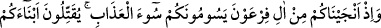
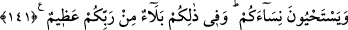

Hâfız der ki:
Senin gibi himmeti yüce devlet kuşu nice kemiğe hırs ede
Ehil olmayanların üzerine devlet gölgesi salıp yazık ede!
Kendisinin kadrini bilmeyen himmetini gereksiz şeylere bağlayan kimseye yazıklar
olsun.
İnsanlar babalarının sîretinde değiller
Herkes zamana uymuş, gitmekteler
Sonra Allah Teâlâ, İsrâiloğulları’nı, Firavun’un elinden kurtarmasını ve ardından
gelen hususları bildirmek üzere şöyle buyurmuştur:
141. Hatırlayın ki, size işkencenin en kötüsünü yapan Firavun’un adamlarından
sizi kurtardık. Onlar oğullarınızı öldürüyorlar, kadınlarınızı sağ bırakıyorlardı. İşte
bunda size Rabbiniz tarafından büyük bir imtihan vardır.
Ey İsrâiloğulları, “hatırlayın o zamanı ki biz sizi Firavun ailesinden kurtarmıştık.”
Yani, Firavun ve kavmini bütünüyle denizde boğup sizi onların elinden kurtarma
hususunda Allah Teâlâ’nın size olan muamelesini hatırlayın. Sonra onları, ne tür
işkencelerden kurtardığını açıklamak üzere şöyle buyurmuştur: “Onlar size azabın en
kötüsünü” şiddetlisini ve korkuncunu “yapıyorlardı:” Bu da şuydu: “Oğullarınızı
öldürüyor,” boğazlıyor, “kadınlarınızı” hizmetlerinde kullanmak için “sağ
bırakıyorlardı. Bunda,” yani Allah’ın sizi, onların elinden kurtarmasında veya Firavun
ailesinin size en kötü azabı yapmasında “size Rabb’iniz” bütün işlerinizin maliki
“tarafından” -Çünkü, nimet ve mihnetin her ikisi de noksanlardan münezzeh olan Allah
Teâlâ’dandır- ölçüsü bilinemeyecek kadar “büyük bir imtihan vardı.” Yani sizin için
bir nimet veya mihnet vardı. Çünkü “bela” hem nimet, hem de mihnet için kullanılabilen
bir kelimedir. Nitekim Allah Teâlâ: “Belki dönerler diye onları iyiliklerle ve
kötülüklerle de sınadık (belevnâhüm)...” (el-A‘raf, 7/168) buyurmuştur.
İsrâiloğullarının kurtuluşu ve Âşûrâ gününün fazileti hakkındaki açıklama, Bakara
sûresinde geçmişti.
Son dört ayetin işârî yorumu şöyledir: Kalbin sıfatlarına işaret olan İsrâiloğulları,